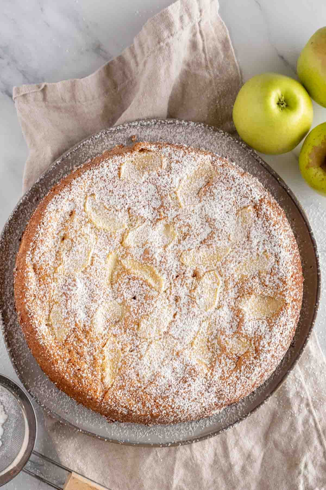

Charlotte

Description
Charlotte is a classic, beloved Russian dessert—a simple, rustic apple cake that is incredibly light, moist, and comforting. It's essentially a tender, vanilla-scented sponge cake studded with a generous amount of soft, tart apples. The magic lies in its simplicity: minimal ingredients transform into a fragrant, homely treat that pairs perfectly with a dusting of powdered sugar, a dollop of sour cream, or a scoop of vanilla ice cream. It's the ultimate easy cake for using up a bounty of apples.
Ingredients
For the Apples:
- 4-5 medium tart apples (such as Granny Smith), peeled, cored, and cut into thin slices or chunks
- 1 tablespoon fresh lemon juice (optional, to prevent browning)
For the Batter:
- 4 large eggs, at room temperature
- 1 cup (200g) granulated sugar
- 1 teaspoon vanilla extract
- 1 cup (125g) all-purpose flour
- 1 teaspoon baking powder
- A pinch of salt
- Butter or oil for greasing the pan
- Powdered sugar, for dusting (optional)
Recipe
- Prepare the Pan and Apples: Preheat your oven to 350°F (175°C). Generously grease a 9-inch (23 cm) springform pan with butter or oil. Peel, core, and thinly slice the apples. Toss them with lemon juice if using to keep them from browning. Arrange the apple slices evenly in the bottom of the greased pan.
- Make the Batter: In a large mixing bowl, using a hand mixer or stand mixer, beat the eggs and granulated sugar together on high speed for 5-8 minutes, until the mixture is very pale, thick, and tripled in volume. It should form a ribbon trail when you lift the beaters. Beat in the vanilla extract.
- Combine Dry Ingredients: In a separate bowl, sift together the flour, baking powder, and salt.
- Fold in Flour: Gently fold the sifted dry ingredients into the egg mixture in 2-3 additions, using a spatula. Use a slow, deliberate folding motion to keep as much air in the batter as possible. Mix only until no large pockets of flour remain.
- Bake: Carefully pour the batter over the apples in the pan, using the spatula to spread it evenly and ensure it seeps into all the gaps between the apples. Bake in the preheated oven for 45-55 minutes, or until the top is a deep golden brown and a toothpick inserted into the center of the cake (not just an apple piece) comes out clean.
- Cool and Serve: Let the sharlotka cool in the pan for 15-20 minutes. Then, run a knife around the edge and carefully release the springform. Allow it to cool completely on a wire rack. Dust generously with powdered sugar before serving. Enjoy warm or at room temperature.
Tip: For extra flavor, you can add a teaspoon of cinnamon to the apples, or a tablespoon of rum or brandy to the batter.
Home